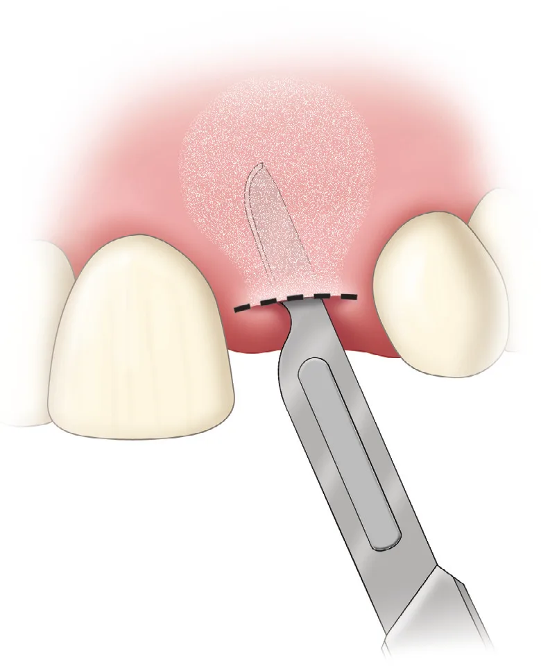
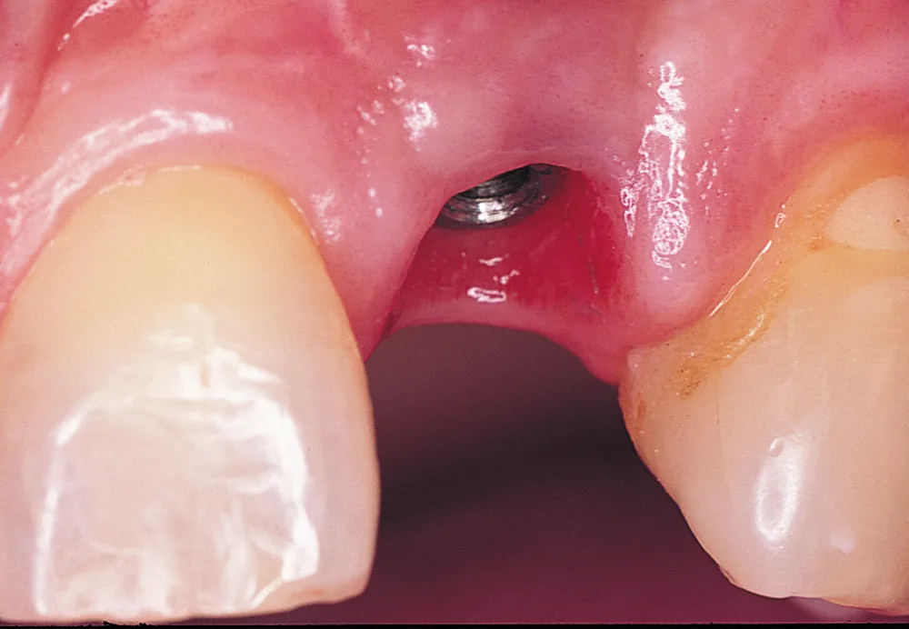

نسخه استخراجشده؛ ترجمه یا تأیید علمی انجام نشده است. وضعیت: captured
در ناحیهی زیبایی، طراحی برش خودش یک تصمیم زیبایی است — چون هر برش عمودی میتواند اسکار بگذارد و هر بلند کردن مکرر پاپیلا میتواند آن را کُند کند.
قاعدهی انتخاب برش، عددی است:
• اگر ناحیهی تماس دندانها کمتر از ۶ میلیمتر از استخوان کرستال فاصله دارد → میتوان از برش سولکولار از کانین تا پرمولر استفاده کرد.
• اگر فاصلهی ناحیهی تماس تا استخوان کرستال ۶ تا ۷ میلیمتر یا بیشتر است → برش پاپیلا-حفظکن (papilla-sparing) توصیه میشود.
منطقش را با درس قبل کنار هم بگذار: وقتی فاصله زیاد است، پاپیلا در آستانهی ناقص ماندن است؛ در چنین وضعیتی هیچ ریسکی روی پاپیلا نباید پذیرفت.
رهاسازی عمودی — تا حد ممکن نه:
• با نزدن برشهای رهاساز عمودی، درمانگر از اسکارهای عمودی که نتیجهی غیرزیبا میدهند جلوگیری میکند.
• برشهای رهاساز عمودی کوچک ممکن است، اما اغلب لازم نیستند و در صورت امکان باید پرهیز شوند.
• استثنا — برداشتن ممبران غیرجذبی: وقتی ایمپلنت و پیوند سخت زیر ممبران غیرجذبیاند و برای برداشتنش فلپ لازم است، برشهای رهاساز معمولاً لازماند و پاپیلاها بلند یا بریده نمیشوند. حتی اگر ایمپلنت و ممبران با برش سولکولار گذاشته شده باشند، رهاسازی عمودی محافظهکارانه توصیه میشود، چون برشهای سولکولار پیاپی گاهی به کُند شدن پاپیلاها میانجامند.
• در همین وضعیت، اگر از برش پوششی (envelope) برای بار دوم استفاده شود، باید مراقب ترومای پاپیلا بود که ممکن است پس از بلند کردن دوم کُند شود.
هدف نهایی: هدف، جایگذاری پیوند بافت نرم بدون ایجاد برش عمودی است تا اسکاری نماند. وقتی این کار درست انجام شود، پاپیلاها حفظ میشوند و اسکار برشها دیده نمیشود.
عمق کاشت: ایمپلنت معمولاً ۳ میلیمتر اپیکال به حاشیهی لثهی ترمیم برنامهریزیشده قرار میگیرد و برش بدون کشش بسته میشود.
و یک اصل کلی ترتیب: مسیر توصیهشده این است که ابتدا پیوند بافت سخت انجام شود و پایهی سخت محل ایمپلنت ساخته شود — بافت نرم روی بستری بنا میشود که استخوان تعیینش کرده است.

اینجا یکی از روشنترین توصیههای عددی این درس است، و پشتش یک آمار نگرانکننده:
بروز عوارض تا ۲۵ درصد گزارش شده است وقتی پیوند بافت نرم همزمان با اکسپوز کردن ایمپلنت یا همزمان با پیوند بافت سخت انجام شده است.
یعنی یک مورد از هر چهار. بهخاطر همین عارضهی بالقوه فاجعهبار، رویکرد محافظهکارانه این است که پیوند بافت همبند زیراپیتلیال بهعنوان یک پروسیجر جداگانه انجام شود، و برای پرهیز از عوارض ناشی از انجام چند پروسیجر همزمان، جراحی بافت همبند بهصورت مجزا انجام میگیرد.
تقویم پیشنهادی:
• پیوند بافت نرم ۳ و نیم ماه پس از کاشت ایمپلنت.
• برای بیشتر بیماران، گذاشتن پیوند بافت همبند زیراپیتلیال بهعنوان پروسیجر جداگانه ۶ هفته پیش از اکسپوز کردن ایمپلنت، حجم بافت و ظاهر لثهی کافی میسازد.
• با احتساب همین ۶ هفته ترمیم پس از پیوند، کل زمان از کاشت ایمپلنت تا ترمیم معمولاً ۵ ماه است.
• حدود ۳ ماه پس از کاشت، محل بررسی میشود تا معلوم شود آیا کانتور استخوان و لثه، برجستگی ریشهی دندانهای مجاور را تقلید میکند یا نه.
• پس از ترمیم ۴ هفتهای لثه، در صورت نیاز دندانپزشک ترمیمی میتواند ژنژیوپلاستی کوچکی برای ساختن سولکوس آناتومیک انجام دهد.
فلسفهی زمانبندی: اگر فلسفهی درمانگر این است که از پروسیجرهای بافت نرم برای تنظیم دقیق نتیجهی زیبایی استفاده کند، این پروسیجر باید به مراحل دیرتر زنجیرهی درمان ایمپلنت موکول شود. بافت نرم آخرین لایهی تصحیح است، نه اولین.
یک قاعدهی مهم برای پروتز موقت: پروتز متحرک باید طوری اصلاح شود که فشار بیشازحد به لثه وارد نکند — فشار ملایم پروتز موقت زیبایی به شکلدهی محل کمک میکند، ولی فشار زیاد به باز شدن برش و از دست رفتن گرفت میانجامد؛ و دندانهای باندشده تنها در صورتی باید تعدیل شوند که مانع شکلگیری فرم لثهی زیبا شوند.
و یک هشدار دربارهی ممبران: وقتی ممبران غیرقابلجذب را برمیداری (مثلاً همزمان با گذاشتن گرفت بافت همبند)، قطعات ممبران نباید در محل باقی بمانند، بهدلیل احتمال واکنش جسم خارجی؛ ممبران باید در یک قطعهی سالم و کامل از محل خارج شود.
